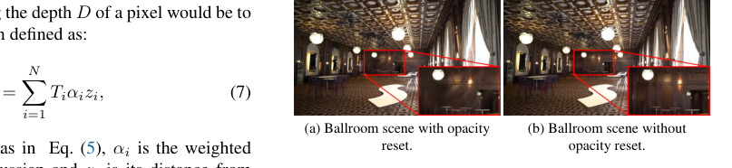
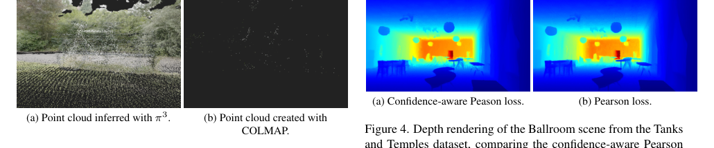
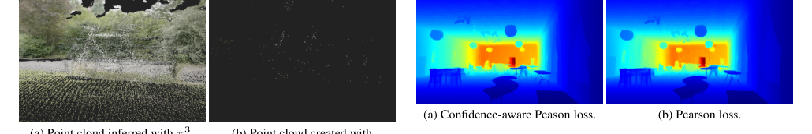
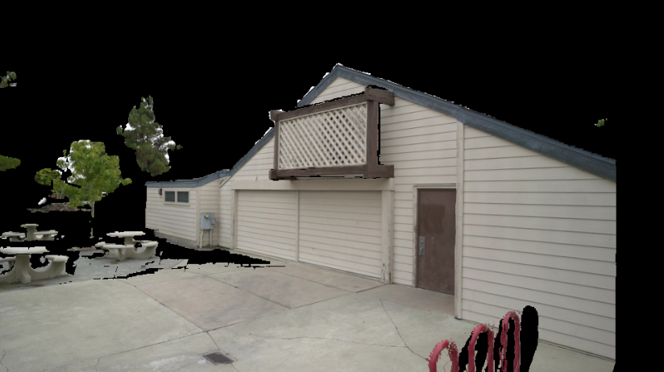
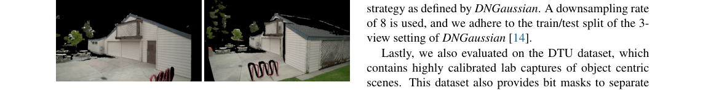
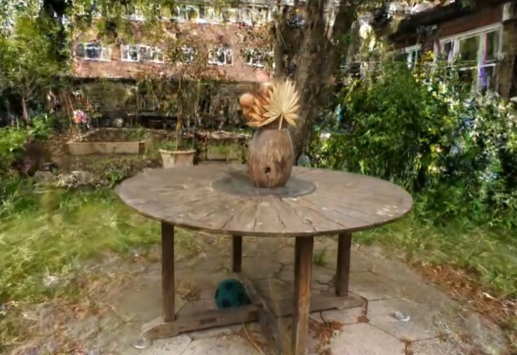

Pi-GS
简单摘要
在这项工作中，我们提出了一种利用无参考点云估计网络的鲁棒方法。这些方法实现了最先进的结果，但训练速度慢，并且由于高延迟而不适合实时渲染。

这些方法实现了最先进的结果，但训练速度慢，并且由于高延迟而不适合实时渲染。3D 高斯泼溅 (3DGS) 等较新方法甚至可以实现实时渲染的高质量 NVS。
核心创新
第一，然而，3DGS 严重依赖于准确的相机位姿和高质量的点云初始化，这在稀疏视图场景中很难获得。
第二，虽然传统的运动结构 (SfM) 管道在这些设置中经常失败，但现有的基于学习的点估计替代方案通常需要可靠的参考视图，并且对姿势或姿态保持敏感。
第三，在这项工作中，我们提出了一种利用无参考点云估计网络的鲁棒方法。
技术细节
我们首先概述高斯泼溅和平面深度渲染的预备知识。这种场景表示相对于 NeRF 的另一个改进是实时渲染速度，以及更快的训练时间。每个高斯都可以由一个3D协方差矩阵和世界空间中的3D中心点来定义，为了将这个3D高斯投影到2D图像平面上进行渲染。


3.1 预赛
这种场景表示相对于 NeRF 的另一个改进是实时渲染速度，以及更快的训练时间。每个高斯都可以由一个3D协方差矩阵和世界空间中的3D中心点来定义，为了将这个3D高斯投影到2D图像平面上进行渲染。此外，为了渲染颜色 ，我们沿着光线混合每个高斯的颜色，如下所示。
3.2 PGSR 稀疏视图
由于多视图观察者修剪，默认 PGSR 不适用于开箱即用的稀疏视图设置。另一个需要调整的参数是不透明度重置间隔。图中的细节：后墙的不透明度完全消失，窗框中的伪影变得可见。
3.3 密集初始化
稀疏视图设置对 COLMAP 等标准 SfM 框架提出了根本性挑战，其中有限的图像重叠可能导致配准失败。该策略提供了高质量稀疏视图重建所需的密集几何初始化和准确姿势。COLMAP 重建仅包含 1,028 个点，但产生 1,013,106 个点。
3.4 深度督导
从 中，我们获得了每个视点的点云，可以将其用作深度图。标准 L1 和 L2 损失通常会导致模型过度拟合推断深度图的有限保真度。在置信感知 Pearson 相关性的帮助下，经过 7,000 次迭代后所得到的渲染深度如图：PCC 所示。
3.5 正常监管
可以借助深度图通过计算像素级偏导数 和 来计算表面法线，其中 和 是像素坐标，是深度值，由 渲染或估计。由于以像素块的形式处理每个图像，因此相邻块之间的梯度不连续，从而导致网格状伪影，如图所示：正常。作为监督，我们简单地使用渲染法线贴图和地面实况法线贴图之间的 L1 损失，定义为。
3.6 深度扭曲
为了进一步提高模型的泛化能力，我们引入了借助深度扭曲生成的伪视图。这是通过将图像像素从一台相机投影到 3D 空间，然后将 3D 点重新投影到目标相机的 2D 图像平面来实现的。然而，在我们的实验中，每对之间的两个伪视图产生了最佳结果。
$$ G(x) = e^{-\frac{1}{2}(x - \mu_i)^T\Sigma^{-1}(x - \mu_i)}. $$
这条式子描述的是单个高斯基元在空间中的响应或密度分布：离中心越近，贡献越大；协方差则决定分布在不同方向上的扩张方式。它直接影响后续投影和渲染时每个高斯的覆盖范围。
$$ \Sigma' = J W \Sigma W^T J^T, $$
这条式子给出了论文中的一条核心计算关系。理解时可以先看左侧最终想得到什么结果，再看右侧的 Sigma、J、W、Sigma 等量如何共同决定这个结果在方法链路中的作用。
$$ \Sigma = R S S^T R^T, $$
这条式子给出了论文中的一条核心计算关系。理解时可以先看左侧最终想得到什么结果，再看右侧的 Sigma、R、S、S 等量如何共同决定这个结果在方法链路中的作用。
$$ C = \sum^N_{i=1} T_i \alpha_i c_i, $$
这条式子给出了论文中的一条核心计算关系。理解时可以先看左侧最终想得到什么结果，再看右侧的 C、sum 等量如何共同决定这个结果在方法链路中的作用。
$$ T_i = \prod^{i-1}_{j=1}(1 - \alpha_j). $$
这条式子给出了论文中的一条核心计算关系。理解时可以先看左侧最终想得到什么结果，再看右侧的 prod、i、j 等量如何共同决定这个结果在方法链路中的作用。
$$ \mathcal{L} = (1 - \lambda) \mathcal{L}_1 + \lambda \mathcal{L}_{D-SSIM}, $$
这条式子给出了论文中的一条核心计算关系。理解时可以先看左侧最终想得到什么结果，再看右侧的 L、lambda、L、lambda 等量如何共同决定这个结果在方法链路中的作用。
$$ D = \sum_{i=1}^N T_i \alpha_i z_i, $$
这条式子给出了论文中的一条核心计算关系。理解时可以先看左侧最终想得到什么结果，再看右侧的 D、N 等量如何共同决定这个结果在方法链路中的作用。
$$ \mathcal{L}_s = ||\min(s_1, s_2, s_3)||_1, $$
这条式子给出了论文中的一条核心计算关系。理解时可以先看左侧最终想得到什么结果，再看右侧的 L、s、min 等量如何共同决定这个结果在方法链路中的作用。
实验结论
实验部分主要围绕 对于测试策略，我们坚持以前最先进的模型以确保可比性 展开。结果表明，Tanks 和 Temples 数据集涵盖了现实世界的室内和室外场景，但我们只使用 8 个场景的子集，就像 Intern-GS 和 InstantSplat 等其他稀疏视图模型所做的那样。




4.1 定量评价
实验部分主要围绕 在 LLFF 上，我们的模型得分稍低，因为我们的模型仅针对可见区域和已知信息进行优化，因为未见区域中缺少信息 展开。结果表明，我们的模型以非常连贯且视图一致的最终场景实现了最高结果，因为我们的模型显着改善了高斯表面对齐。
4.2 消融
实验部分主要围绕 我们评估每个单独优化对最终结果的影响 展开。
对比结果表明，很明显，我们所有的优化都进一步改善了结果。进一步结合定性现象和消融分析，可以看出：通过减少 SfM 所需的时间，密集点云初始化显着改善了结果。
理解评价
如果把这篇论文放回问题背景里看，它真正的价值在于：然而，3DGS 严重依赖于准确的相机位姿和高质量的点云初始化，这在稀疏视图场景中很难获得。这说明作者不是只补一个局部模块，而是在重新组织问题该怎样被解决。
最能支撑这个判断的，还是实验给出的证据：与 NeRF 相比，该场景表示的另一个改进是实时渲染速度以及更快的训练时间。换句话说，这些设计并不只是概念上更完整，而是实实在在改变了最终结果。
当然，它离真正成熟的方案还有距离：当前方案的局限在于它仍然受制于计算资源、输入质量或场景复杂度，距离真正稳健的大规模部署还有差距。后续更值得继续推进的方向，是 未来继续提升效率、泛化能力以及在更复杂场景下的稳定性。